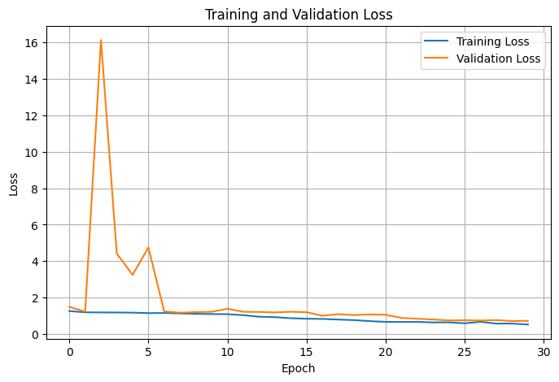
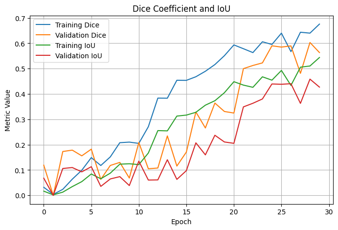
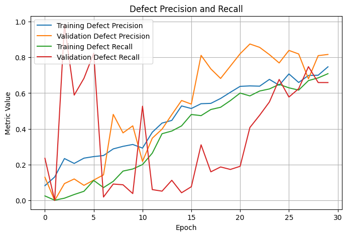

Surface Defect Detection Using U-Net
Developed and trained a U-Net convolutional neural network to perform pixel-level semantic segmentation of manufacturing defects on magnetic tile surfaces. The project combined image preprocessing, dataset management, convolutional neural networks, model training, performance evaluation, and qualitative analysis to investigate automated visual inspection for industrial manufacturing.

Automating Surface Defect Inspection
Surface inspection is an important part of manufacturing because defects can affect product quality, reliability, and performance. Manual inspection and conventional image-processing methods may become less consistent when defects are small, low contrast, or visually similar to the surrounding material.
Why Segmentation?
Image classification can determine whether an image contains a defect, but it does not identify the exact position or shape of that defect. Semantic segmentation instead assigns each image pixel to either the defect or background class.
Project Objective
Train a neural network capable of taking a grayscale magnetic tile image as input and generating a binary mask identifying the location and shape of surface defects.
Magnetic Tile Surface Defects
The project used the Magnetic Tile Surface Defects dataset from Kaggle, containing grayscale magnetic tile images organized into six categories. Five categories contained surface defects, while the free category contained images without visible defects. Defective images included corresponding ground-truth masks identifying the exact defect region.
Preparing Images for Supervised Segmentation
Each of the five defective categories was divided separately into approximately 70% training, 15% validation, and 15% testing data. Splitting each category individually ensured that every defect type remained represented across all three datasets.
Load
Read images and corresponding ground-truth masks.
Resize
Convert inputs to 256 × 256 pixels.
Normalize
Scale grayscale values from 0–255 to 0–1.
Binarize
Convert masks into defect and background pixels.
Batch
Shuffle and train using batches of eight.
Class Imbalance
The free category contained substantially more samples than all five defective categories combined. Training on every defect-free image could cause background-only samples to dominate the training process.
Training Strategy
The defective training set contained 274 image-mask pairs. Only 55 defect-free samples were included in training, while the remaining 897 free images were reserved for separate false-positive evaluation.
Encoder-Decoder Segmentation Network
The model was implemented as a standard U-Net convolutional neural network. The encoder progressively reduced spatial resolution while learning increasingly complex image features. The decoder then reconstructed the spatial resolution and combined its features with corresponding encoder outputs through skip connections.
Feature Extraction
Four encoder stages used 32, 64, 128, and 256 filters. Each stage contained two 3 × 3 convolutional layers with batch normalization and ReLU activation.
512 Filters
The deepest stage of the network contained 512 filters followed by a dropout layer with a dropout rate of 0.3.
Spatial Reconstruction
Four decoder stages used 256, 128, 64, and 32 filters. Transposed convolutions increased spatial resolution while skip connections restored encoder information.
Preserve Spatial Detail
Matching encoder and decoder feature maps were concatenated to preserve information useful for locating small defects and identifying defect boundaries.
Binary Defect Mask
A final 1 × 1 convolution with sigmoid activation generated one defect probability for every image pixel.
Probability > 0.5
Output probabilities greater than 0.5 were classified as defect pixels and converted into the final binary mask.
Optimizing Pixel-Level Defect Detection
The model was trained using the Adam optimizer and a loss function combining binary cross-entropy with Dice loss. Binary cross-entropy evaluated individual pixel predictions, while Dice loss encouraged overlap between predicted and ground-truth defect regions.
Adam Optimizer
Initial learning rate of 0.001.
Batch Size
Eight image-mask pairs per batch.
Training Length
Maximum of 30 training epochs.
Loss Function
Binary cross-entropy combined with Dice loss.
Early Stopping
Configured to stop after seven epochs without validation Dice improvement.
Learning Rate Reduction
Reduced by a factor of 0.5 after three epochs without validation-loss improvement.
Monitoring Model Performance Across 30 Epochs
Training continued for all 30 scheduled epochs. The highest validation Dice coefficient occurred during epoch 29, and the corresponding saved model weights were restored for final test-set evaluation.



Combined Defective Test Performance
The final model was evaluated on 59 defective images that had not been used during training or validation. Precision, recall, Dice coefficient, and Intersection over Union were used instead of ordinary pixel accuracy because background pixels represented the majority of each image.
Performance Varied by Defect Type
Test images were also evaluated separately for each defect category. The results showed that the network's segmentation performance varied considerably depending on defect geometry, size, contrast, and appearance.
| Defect | Precision | Recall | Dice | IoU |
|---|---|---|---|---|
| Blowhole | 0.3958 | 0.5354 | 0.3013 | 0.1958 |
| Break | 0.7046 | 0.6181 | 0.6521 | 0.4843 |
| Crack | 0.4921 | 0.3574 | 0.5887 | 0.4456 |
| Fray | 0.7063 | 0.7014 | 0.7039 | 0.5430 |
| Uneven | 0.8674 | 0.5130 | 0.6448 | 0.4758 |
Original Image → Ground Truth → Prediction
Visual inspection of the predicted masks provides information that numerical metrics alone cannot capture. Each example compares the original magnetic tile image, its ground-truth defect mask, and the U-Net prediction.
What the Model Learned — and Where It Struggled
The results demonstrate that the U-Net learned meaningful spatial information about the magnetic tile defects, but segmentation performance depended strongly on defect appearance and size.
Conservative Defect Predictions
Precision was substantially higher than recall. This means that when the network classified a pixel as defective, the prediction was often correct. However, the lower recall indicates that some predicted masks captured only part of the complete ground-truth defect.
Fray Produced the Highest Dice Score
Fray defects achieved the strongest overall overlap between predicted and ground-truth masks. The category produced a Dice coefficient of 0.7039 and an IoU of 0.5430. However, only five fray samples were included in the test set, making the result sensitive to individual images.
Thin Cracks Were Difficult to Detect
Crack defects produced comparatively low recall. Thin cracks occupy a relatively small number of image pixels, and resizing every image to 256 × 256 may have reduced some of the visual detail required for complete segmentation.
Low False-Positive Pixel Rate
The network was separately evaluated using 897 defect-free images. Across more than 58 million background pixels, fewer than 1% were incorrectly classified as defective.
Improving Segmentation Performance
The project successfully established a complete supervised segmentation pipeline, but several areas could be explored to improve model performance in future work.
Data Augmentation
Introduce controlled image augmentation to increase training diversity and reduce the effects of the relatively small labelled dataset.
Higher Image Resolution
Train using higher-resolution images to preserve thin cracks and small defect regions that may lose detail during resizing.
Attention-Based U-Net
Investigate attention mechanisms and more advanced U-Net architectures to improve detection of subtle surface defects.
Larger Dataset
Additional labelled defect samples would improve category balance and reduce sensitivity to individual validation and test images.
Hyperparameter Exploration
Additional computational resources would allow more extensive investigation of learning rates, loss weighting, batch sizes, and model architectures.
Error Analysis
Future testing could evaluate false-positive behavior on an image-by-image basis in addition to the overall pixel-level false-positive rate.